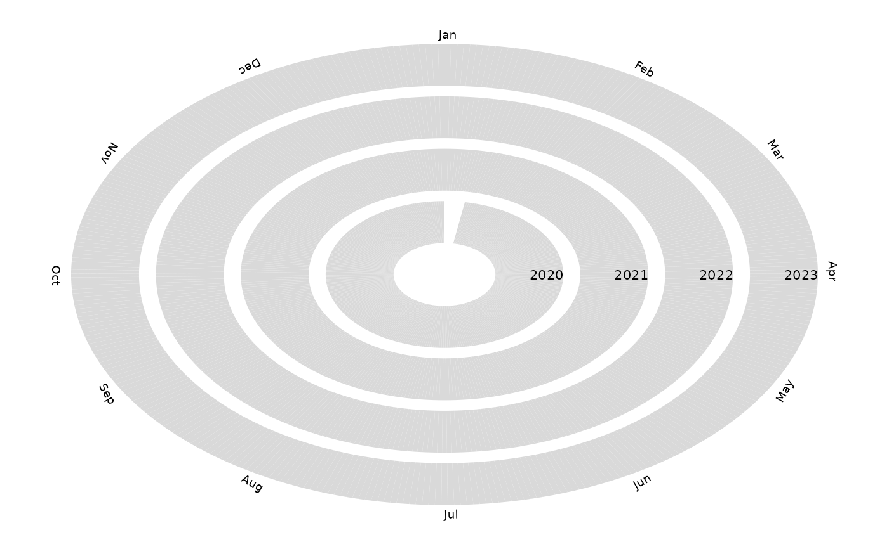

Create a spiral plot showing missing observations in a time series.
Usage
geom_tsspiralmiss(
mapping = NULL,
data = NULL,
stat = StatTSSpiralMiss,
position = "identity",
na.rm = FALSE,
ring_spacing = 1,
observed_colour = "grey85",
missing_colour = "black",
...
)Arguments
- mapping
Set of aesthetic mappings created by
ggplot2::aes().- data
A data frame, tibble, or tsibble containing the time-series data.
- stat
Statistical transformation used by the layer. Defaults to
StatTSSpiralMiss.- position
Position adjustment. Defaults to
"identity".- na.rm
Logical. Should missing values be removed silently?
- ring_spacing
Numeric value controlling the distance between yearly rings.
- observed_colour
Colour used for observed periods.
- missing_colour
Colour used for missing periods.
- ...
Other arguments passed to
ggplot2::layer().
Details
geom_tsspiralmiss() displays each year of a time series as a
radial ring using a fixed 365-day calendar. Observed periods are
shown in one colour and missing periods are shown in another.
The spiral starts at 12 o'clock on January 1 and proceeds clockwise through the year.
The input frequency is detected automatically. Daily observations are used directly. Weekly, monthly, quarterly, and annual observations are expanded to daily observations before plotting.
The geometry is designed specifically for exploring the temporal structure of missing observations.
January 1 is positioned at 12 o'clock and time proceeds clockwise. Each year is represented by one radial ring, with 365 fixed angular divisions.
A period is classified as observed when a corresponding observation is present in the input data. Periods without an observation are classified as missing.
Leap years do not create a 366th angular division. February 29 is mapped to the February 28 position and dates after February 29 are shifted by one day.
Examples
library(ggplot2)
set.seed(123)
df <- data.frame(
date = seq.Date(
as.Date("2020-01-01"),
as.Date("2023-12-31"),
by = "day"
)
)
df$date[1:10] <- NA
ggplot(
df,
aes(x = date)
) +
geom_tsspiralmiss(
ring_spacing = 2
) +
theme_void()
#> Warning: Removed 10 rows containing non-finite outside the scale range
#> (`stat_ts_spiral_miss()`).
